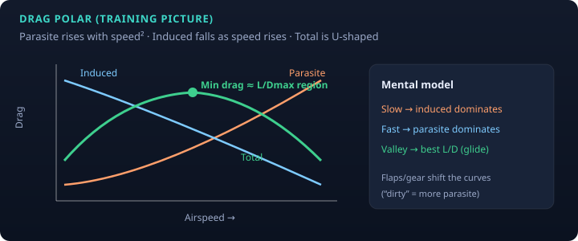

PHAK Ch. 5 · study note
Total drag is usefully split into two families with opposite airspeed trends. That split explains why the drag curve is U-shaped and why there is a best-glide / max L/D region. Interactive: Drag Polar Lab.
| Type | What it is | With airspeed |
|---|---|---|
| Parasite | Form, skin friction, interference — “pushing the airframe through the air” | Increases roughly with V² (dynamic pressure) |
| Induced | Byproduct of producing lift (wingtip vortices / downwash) | Highest when slow / high CL; falls as speed rises |

Gear and flaps increase parasite drag (and change lift capability). “Dirty” shifts you toward higher total drag and usually a different speed for min drag. Always use AFM speeds for the configuration you are in.
Near the ground, induced drag decreases (see ground effect note). That is one reason the airplane can float or lift off early in ground effect.
Figures are original educational SVGs.
← Notes · AOA · Ground effect